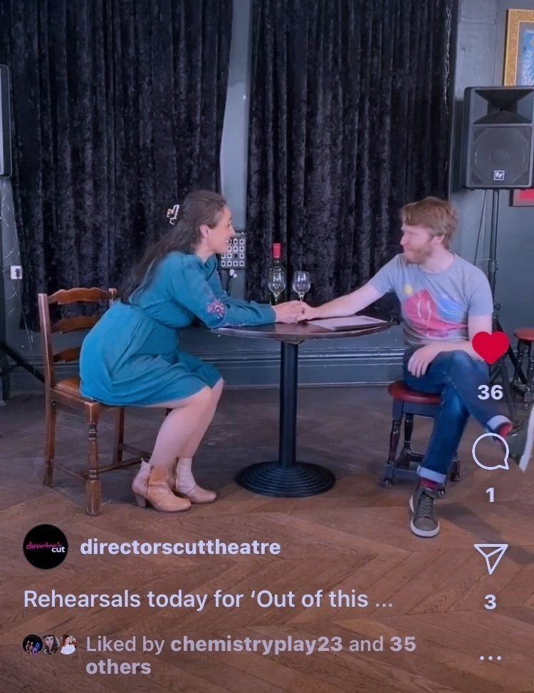

Pocket Of Light is now funded by Arts Council England
The year kicked off with the fantastic news that our funding application to Arts Council England on behalf of Pocket Of Light, was successful.

Cast as Denise Savage in 'Savage In Limbo' by John Patrick Shanley
I am delighted to be performing the role of Denise Savage in 'Savage In Limbo,' by John Patrick Shanley. at The Lantern Theatre, with a run beginning on 10th October 2024.
Read More →
Role Play Actor For NHS Medical Simulation Courses
Always a wonderful day at GAPS Simulation & Skills Centres, Role Playing patients to support the Continued Professional Development of Medical Professionals within the NHS.
Read More →
'In Your Dreams' with Directors Cut Theatre
Another great show with Directors Cut Theatre, showcasing new original work by professional Actors, Writers & Directors. The inspiration point for this show was 'In Your Dreams.' I played Tara in Cerys Evans' 'Spark Joy,'
Read More →
'Truth & Lies' with Directors Cut Theatre
Another great show with Directors Cut Theatre, showcasing new original work by professional Actors, Writers & Directors. The inspiration point for this show was 'Truth & Lies.' I played Sarah from the world of Jo Sutherland's 'Lucy's Pharmakon,'
Read More →
'Out Of This World' with Directors Cut Theatre
Another great show with Directors Cut Theatre, showcasing new original work by professional Actors, Writers & Directors. The inspiration point for this show was 'Out Of This World.' I played Michelle in Emma Kelly's 'Digital Pet,'
Read More →
Cast as Lil Miller in 'Kinderstransport'
I had the joy of playing Lil Miller in Diane Samuels' Kinderstransport in a run at The South London Theatre produced by Everything Is Rosie. We inhabited the story of Eva, a young girl evacuated from Nazi Germany
Read More →Voice Over Project
Voice Over for Philips Hue Smart Lights
I had great fun performing this voice over for the Philips Hue Smart Lights campaign with Voice Archive. The brief was a woman who is confident, playful & assured.
Read More →